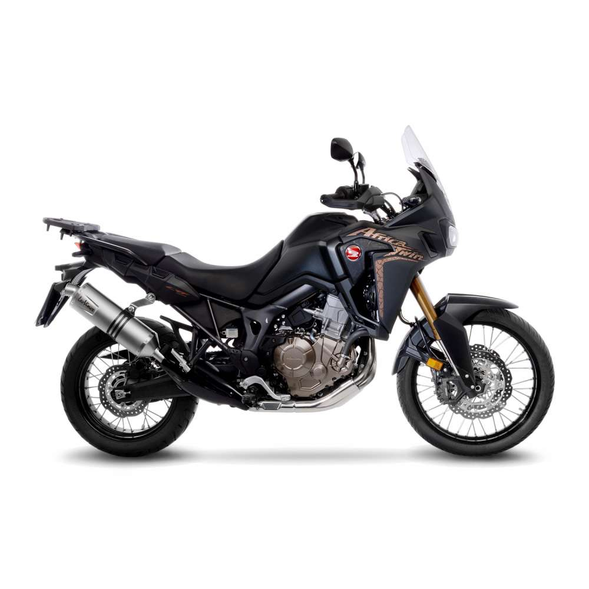

Honda CRF 1000 - Africa Twin
The Honda Africa Twin is a dual-sport motorcycle made by Honda in four versions, 1988 to 1989 as the 650 cc (40 cu in) V-twin XRV650,[1] then from 1990 to 2000 as the 750 cc (46 cu in) V-twin XRV750T, then from 2016 to 2019 as the 1,000 cc (61 cu in) parallel-twin CRF1000L and from 2020 to present as the CRF1100L. (source - Wikipédia)